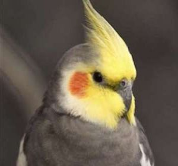

Cockatiel Bird
Cockatiels Are The BEST Singers and perfect Pets
- Lifespan:10 – 14 years
- Mass:90 g (Adult)
- Length:30 – 33 cm (Adult)
- Higher classification:Nymphicus
The cockatiel's distinctive erectile crest expresses the animal's emotional state.
The "normal grey" or "wild-type" cockatiel's plumage is primarily grey with prominent white flashes on the outer edges of each wing. The face of the male is yellow or white, while the face of the female is primarily grey or light grey
Cockatiels are relatively vocal birds, the calls of the male being more varied than that of the female. Cockatiels can also be taught to sing specific melodies. Much like parrots, but not quite to that extent, Cockatiels can be taught to repeat words spoken by human owners.